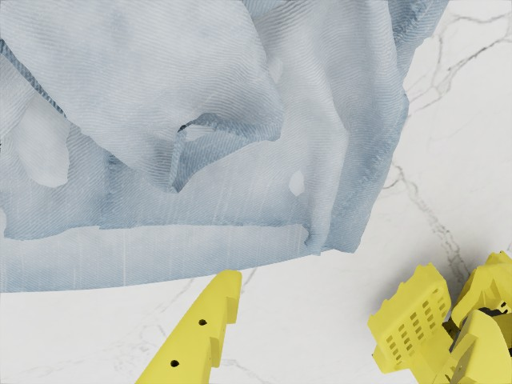
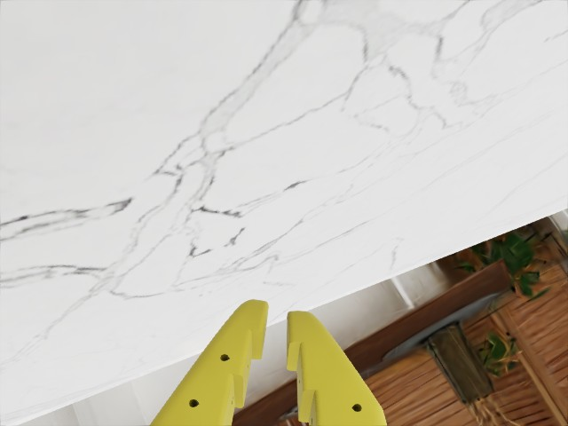

LEHOME / LONG-SLEEVE FOLDING / GT 3D FLOW
使用 Flow 的模型，已经实现
输入同一段 16 帧 RGB 历史、实测关节状态，以及 K=16 条衣服表面点的三维过去轨迹。训练时同时预测动作，并通过独立辅助头补全其余 48 个点的过去运动。
这是实现与小样本训练验收。三组训练使用同一真实回放窗口，属于过拟合检查。还没有正式数据集训练、未见衣服测试或 Flow 模型的闭环叠衣成功率；不能与旧 RGB ACT 的 70% 直接比较。
模型如何使用 Flow
先做仿真 GT 上界：世界坐标、米、0.5 秒历史；不包含夹爪点。遮挡时的 GT 历史位置属于特权信息。深度仅用于当前表面可见性筛选，不作为策略输入。RGB tracker 尚未接入。
同一窗口上的三组训练检查
RGB-H、RGB-H＋Tracks、RGB-H＋Tracks＋Completion 具有相同模型骨架、成对权重初始化、同一窗口和训练预算。这里的动作误差仅反映训练样本上的拟合，不能判断哪组泛化更好。
● RGB-H● RGB-H＋Tracks● RGB-H＋Tracks＋Completion
真实 RGB 上查看衣服运动与补全
显示训练窗口的顶视图。轨迹全部投影到当前相机坐标；蓝线是输入点 GT 历史，灰线是隐藏点 GT 历史，红线是模型补全。默认显示前 8 个隐藏点，按预先固定的随机次序选择。


同一物理时刻的两路腕视图。模型实际输入三路 640×480 RGB。
已验证的模型边界
- 改变轨迹历史，动作输出会改变。
- 隐藏目标、辅助 query 不进入 actor。
- 未来专家动作不能改变历史补全。
- 辅助损失的梯度到达共享观测编码器。
- 空轨迹、冷启动和 NaN padding 不污染输出。
- 四组模型使用相同初始化和模块。
- 点顺序不作为语义身份编码。
- 在线历史缓存与离线窗口一致。
- 模型 checkpoint 与动作队列可恢复、重置。
- 删除整个辅助头，动作输出保持完全相同。
来源：官方专家关节动作的一次同步重渲染；本页训练为单窗口工程检查。完整参数、日志与数据来源 JSON · 模型说明与运行命令 · 旧 RGB ACT 开发评估 · 现成专家 demo
正在加载本页结果…